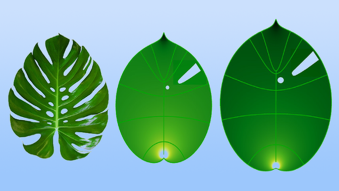

Yaprak Büyümesinde Konformal Model

Fizik alanındaki bilim insanları, yaprakların büyümesini tahmin
etmek için matematiksel bir dönüşüm olan konformal haritanın
kullanıldığını göstermişler. Matematiğin biyolojide uygulanmasına
D’Arcy Thompson 1917 yılında yazdığı Büyüme ve Biçim Üzerine adlı
kitabıyla öncülük etmişti.
Şimdi, Paris’teki École Normale Supérieure’den fizikçiler Martine
Ben Amar ve Anna Dai, bu asırlık metinden bir sayfa ödünç aldılar.
Dai ve Ben Amar, Thompson’ın bitki ve hayvan büyümesini gösteren
diyagramlarının çoğunun konformal haritalara -açı koruyan
dönüşümlere- benzediğini gözlemledikten sonra konformal
haritaların matematiğini yaprak büyümesi konusuna taşıdılar.
Fiziksel enerji minimizasyonu fikrinin matematiksel teknik için
nasıl güçlü bir motivasyon sağladığını gösteriyorlar.
Biyolojide, tıpkı diğer tüm fiziksel sistemlerde olduğu gibi
organizmaların nasıl mümkün olduğunca az enerji kullanmaya
çalıştığını gösteren çeşitli büyüme mekanizmaları vardır. Bu,
büyüyen organizmalarda iç elastik gerilmelerin azaltılmasını da
içerir.
Ancak, bu enerji minimizasyonu büyüme görüşünün, Dai ve Ben
Amar’ın Thompson’ın kitabında belirttiği matematiksel büyüme
görüşüyle çok az ilgisi var gibi görünüyor. Genç bir yaprağın
üzerine bir ızgara çizdiğinizi ve geliştikçe sarkmasını
izlediğinizi düşünün. Yaprak uygun bir şekilde yaşlandıkça
çizgiler uzayacak ve bükülecektir, ancak ızgara çizgilerinin
birleştiği açılar değişmeyecektir. Bu basit matematiksel değişimin
başlangıçta yaprağın büyümesine katkıda bulunan fiziksel güçler
üzerinde çok az etkisi varmış gibi görünür.
Bununla birlikte, Dai ve Ben Amar, bu haritanın iş başındaki
karmaşık fiziğin temel unsurlarını yakaladığını keşfetti. Monstera
deliciosa (veya “İsviçre peyniri”) bitkisinin yapraklarını
kullanarak, konformal haritaların elastik stresi azaltırken yaprak
büyümesini kopyaladığını ve matematiksel dönüşümün fiziksel
gerekçesini gösterdiğini ortaya koydular. Analiz bu noktaya kadar
2 boyutlu olarak yapıldı ve araştırmacılar şimdi 3 boyutlu
yaprakların gelişimini tanımlamak için konformal haritaların
kullanılıp kullanılamayacağını görmek istiyorlar. Kaynak:
physics.aps.org/articles/v15/s158